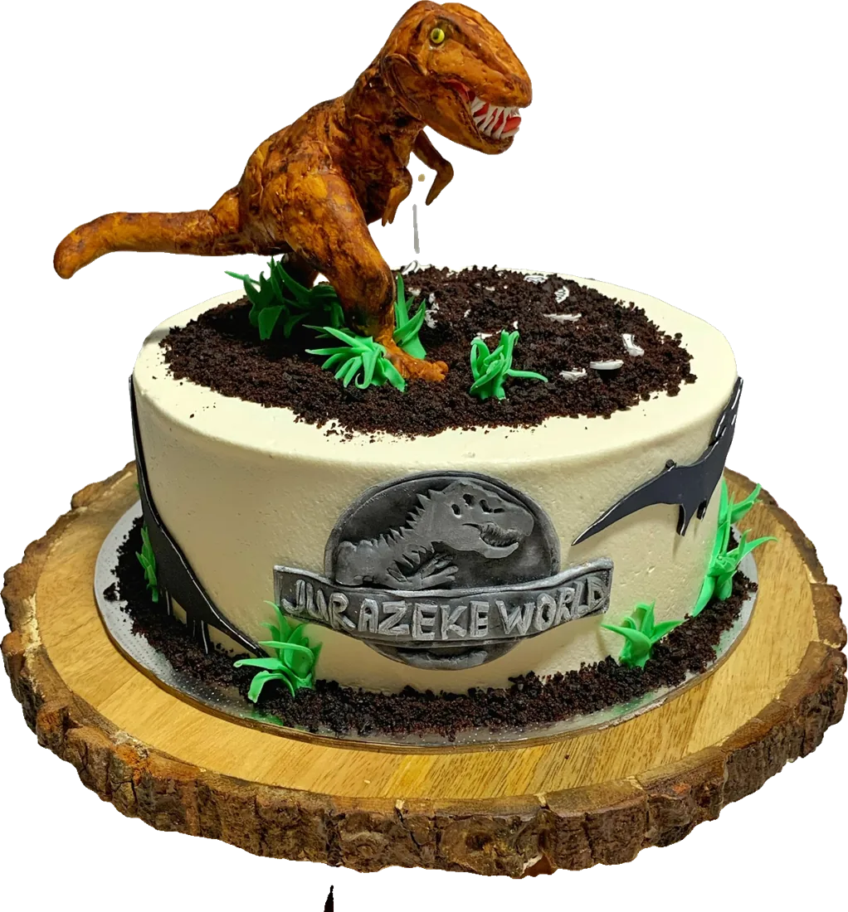
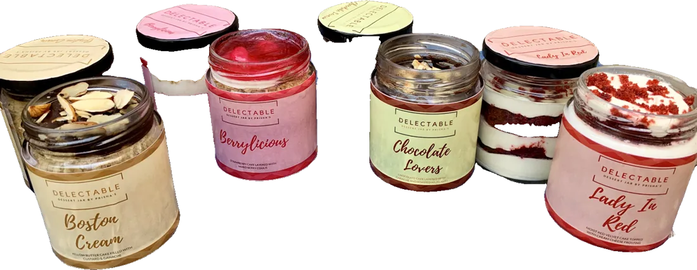
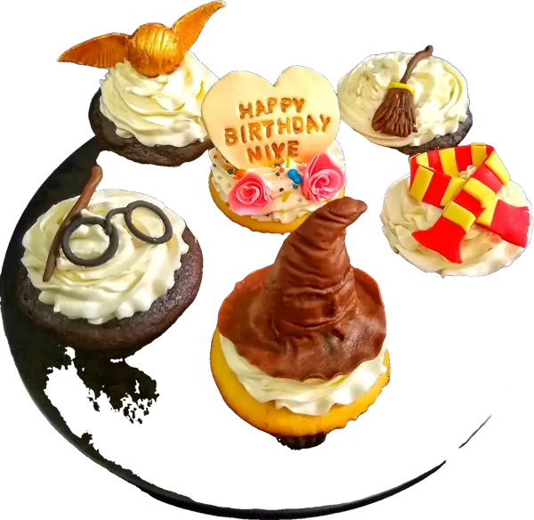
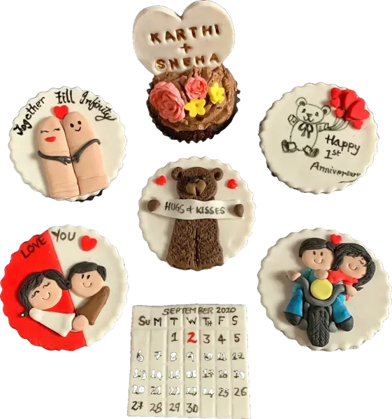
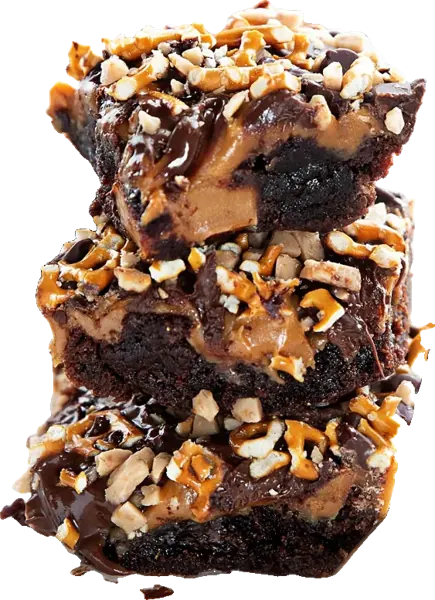
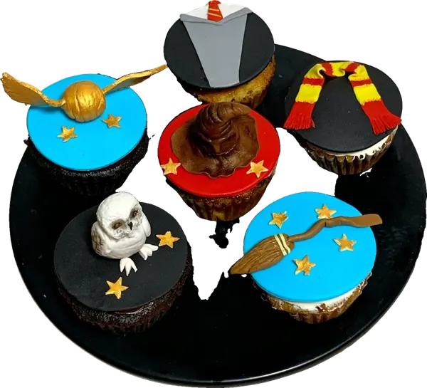

Jurassic World,T‑rex on top.
4.8 on Google · 61 of 67 reviews are five stars · Anna Nagar, Chennai
Tap a cake to pick it, or pick one up and toss itTap a cake to pick it. Or toss one.
Tap one to put it in your brief. Yours doesn't have to be on this wall: send any idea.

Jurassic World,T‑rex on top.
Flavours people mention in their reviews
For smaller days.

Strawberry cake layered with mixed berry coulis.
Chocolate cake layered with ganache.
Moist red velvet cake topped with cream cheese frosting.
Yellow butter cake filled with custard & ganache.




Sharon · the baker
ButtercreamMentioned in Google reviews
It starts with one WhatsApp message.
The theme, the date, how many people. A photo of your idea helps.
Carry on in the same WhatsApp chat.
Mon–Fri 10 am–7 pm, Saturday 10 am–3 pm. Sunday is closed.
You attach a photo like this